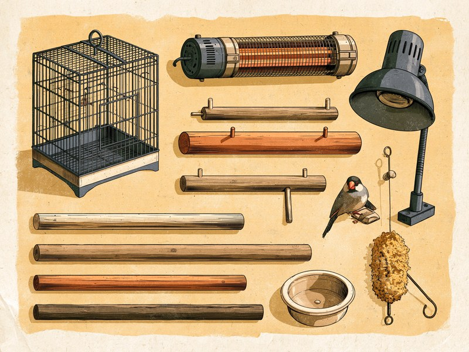

インコや文鳥の飼育アイテムは、色や形の可愛さで選ぶより、翼・足・体温・くちばし・呼吸器といった、鳥ならではの弱点を守る道具として考えると、何を優先すべきかが見えてきます。鳥は体が小さく呼吸器がとても発達しているので、道具そのものだけでなく「どこに、どんな部屋に置くか」まで含めて考えるのが、鳥と暮らすときの大切なポイントです。 What does a budgie or a Java sparrow actually need at home? Rather than picking what looks cute, think of each item as protecting one of a bird's weak points: its wings, its feet, its body temperature, its beak and its very sensitive lungs. And because those lungs are so sensitive, where you put the cage matters as much as what you put in it.
この記事で紹介する5カテゴリ:
- ケージ — 尾羽が床につかない大きさと、かじっても安心な素材
- 止まり木 — 鳥の種類に合った太さと、天然木を選ぶ理由
- 保温器具 — 保温電球とサーモスタットは必ずセットで
- 水浴び用品・おもちゃ — 羽とくちばしの健康を保つ道具
- 設置環境のリスク — テフロン加工の調理器具と直射日光に要注意
出典を見る
※本記事のリンクにはアフィリエイトリンクが含まれます。Amazonのアソシエイトとして、Tiny Wondersは適格販売により収入を得ています。
ケージ:尾羽が床につかない大きさと、かじっても安心な素材
ケージ選びでまず確かめたいのは大きさです。目安は幅・奥行き35cm前後、高さ40cm前後で、最低条件は「止まり木にとまったとき尾羽が床につかないこと」。大きいほど飛行スペースが増え運動不足やストレス軽減にもつながるので、余裕があれば大きめを選ぶと安心です。
鳥はワイヤーをよくかじるため塗装されていないものが無難で、塗装がはがれたものを誤飲すると体調を崩す恐れがあります。形は丸型より箱型のほうが掃除しやすく、事故のリスクも低いとされています。
出典を見る
出典: マイナビおすすめナビ(監修: 霍野晋吉、エキゾチックアニマル専門獣医師) osusume.mynavi.jp
止まり木:鳥の種類に合った太さと、天然木を選ぶ理由
止まり木は鳥が一日の大半を過ごす「床」にあたる道具で、決め手は太さです。目安は文鳥やセキセイインコで直径15mm、オカメインコなど中型の鳥で直径20mm。種類に合わせて選びましょう。
素材は表面が凸凹した天然木がおすすめです。プラスチック製は表面が均一なぶん足への負担が大きくなる恐れがあり、できれば避けたいところ。
もうひとつのコツが、ケージに太さの異なる止まり木を最低2本設置すること。行き来することで足の筋肉がバランスよく発達します。
サイズが合っているかは足の裏で分かります。変色やタコができている場合はサインなので、ときどき確かめてみてください。
出典を見る
出典: 鳥専門動物病院「もも小鳥の動物病院」運営者によるブログ(止まり木の太さの目安・足裏のサイン) hatarakitakunai30.hatenablog.com
保温器具:保温電球とサーモスタットは必ずセットで
鳥は寒さに弱い動物です。鳥専門の動物病院が示す適温の目安は、健康な成鳥で20〜25℃、幼鳥や老鳥で26〜32℃、病気時や羽を膨らませているときは30〜32℃。日本の冬はこの範囲を大きく下回るため、保温器具はほぼ必須です。
保温器具の定番は保温電球ですが、絶対に外せないのがサーモスタットとの併用です。設定温度で電球を止め、下がれば温める、温度の見張り役です。
サーモスタットなしで保温電球をつけっぱなしにすると、ケージの中が温まりすぎて、過熱による体調不良や火災事故につながるリスクがあると、鳥専門の動物病院が注意を呼びかけています。「電球とサーモスタットで適温を保つ」がセットで一つの道具、と覚えておくと安心です。
あわせて、ケージ内の温度を確かめる温度計も用意しておきましょう。部屋とケージ内の温度はずれることがあるため、鳥がいる場所そのものの温度を見ることが大切です。羽を膨らませたままの状態が続くときの見方は体調不良のサインガイドで取り上げています。
Amazonで「小鳥 保温電球」を探す
Amazonで「小鳥 サーモスタット」を探す
Amazonで「小鳥 温度計」を探す
出典を見る
出典: もも動物病院(鳥専門獣医師運営、鳥の保温について) momo-birdclinic.com
水浴び用品・おもちゃ:羽とくちばしの健康を保つ道具
水浴びは遊びであると同時に体のお手入れで、羽の汚れや脂粉を落とし羽繕いを促します。専用の水浴び容器か浅い器を用意しましょう。容器は体がはみ出さない広さで洗いやすいものを選び、水はこまめに替えて清潔に保ってください。
もうひとつ用意したいのがかじり木やおもちゃです。くちばしは爪と同じく伸び続けるため、「かじる」行動を促すことが健康維持に役立つとされています。選ぶときは、かじって壊れた破片を飲み込まないか、塗装や部品がないかを確かめると安心です。ぼろぼろになったら取り替えましょう。
Amazonで「インコ 水浴び」を探す
Amazonで「インコ かじり木」を探す
設置環境のリスク:テフロン加工の調理器具と直射日光に要注意
道具をそろえたら、最後に「どこに置くか」を考えます。置き場所には鳥ならではのリスクがあるからです。
いちばん知っておいてほしいのが、テフロン(フッ素樹脂)加工の調理器具です。フライパンなどが高温になると有毒なガスが発生し、人には無害な微量でも、鳥は呼吸器が非常に発達しているため、その微量が致死量になりうるのです。症状は数分で発症し、数十分で死に至ることもあると報告されています。
フライパンだけでなく、ホットプレートやたこ焼き器にも同じ加工のものが多く、同様に危険です。鳥のいる部屋ではこれらを使わないこと。「換気していれば大丈夫」と考えず、鳥の部屋とキッチンを分ける発想で置き場所を決めてください。
もうひとつ気をつけたいのが直射日光です。日当たりの良い窓際は、夏場は直射日光でケージ内の温度が短時間で40℃を超えることがあります。鳥は自分で逃げ出せないため、窓際に置く場合は日差しの動きを確かめ、夏は直射日光の当たらない場所に移してあげてください。
- テフロン(フッ素樹脂)加工のフライパン・鍋を高温で使う(有毒ガスが発生し、鳥には微量でも致死量になりうる)
- ホットプレート・たこ焼き器を使う(同じ加工がされているものが多く、同様に危険)
- 夏場に直射日光の当たる窓際にケージを置く(ケージ内が短時間で40℃を超えることがある)
- サーモスタットなしで保温電球をつけっぱなしにする(過熱による体調不良や火災事故のリスク)
- 塗装されたワイヤーや、壊れた破片を飲み込みやすいおもちゃを与える(誤飲で体調を崩す恐れ)
出典を見る
出典: 文鳥大学(テフロンガスの毒性について) buncho-univ.com / マイナビおすすめナビ(直射日光とケージ内温度、監修: 霍野晋吉) osusume.mynavi.jp
止まり木が合っているかどうかを知るいちばん簡単な方法は、鳥の足の裏を見ることです。カタログの数字を見比べるよりも、「足裏の一部が変色していないか、タコができていないか」を実際の足で確かめるほうが、その子に合っているかどうかがはっきり分かります。鳥は種類によって足の大きさが違うので、目安の太さはあくまで出発点。太さの違う止まり木を2本以上置いて、鳥自身に選ばせてあげるのがいちばんの近道です。
ミニクイズ:鳥のいる部屋でたこ焼きパーティー。よく換気していれば問題ない?(タップして答えを見る)
こたえ×。たこ焼き器やホットプレートには、テフロン(フッ素樹脂)加工がされているものが多く、高温になると有毒なガスが発生します。鳥は呼吸器が非常に発達しているため、人には無害な微量でも致死量になりうるとされ、症状は数分で発症することもあります。鳥のいる部屋では、テフロン加工の調理器具を使わないのが基本です。